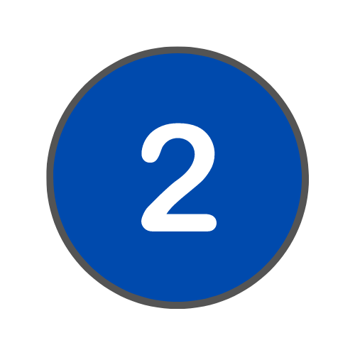
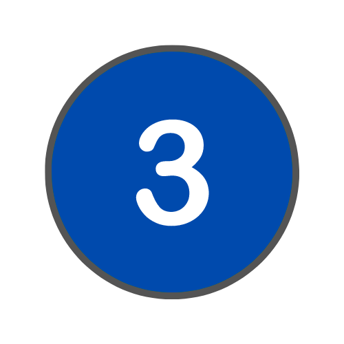
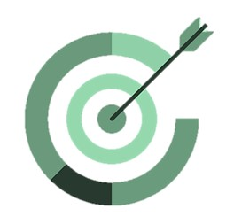

Estructura
|
Tema 1: Comunicación
- Elementos de la comunicación
- Funciones del lenguaje
- Actividades
Para ver los apuntes completos, descarga la versión ePub en este enlace
Tema 2: Los textos
- Tipos de textos
- Texto argumentativo
- Actividades
Para ver los apuntes completos, descarga la versión ePub en este enlace
Tema 3: Las oraciones
- Modalidad oracional
- Definición
- Tabla
- Explicación detallada
- Actividades
Para ver los apuntes completos, descarga la versión ePub en este enlace
Tema 4: Literatura: Poesía
- ¿Qué es la literatura?
- Definición
- Lenguaje literario
- Explicación detallada
- Géneros literarios
- Lírico
- Narrativo
- Dramático
- Poesía: figuras literarias
- Figuras de dicción
- Figuras de pensamiento
- Tropos
Para ver los apuntes completos, descarga la versión ePub en este enlace
Proyecto final
El proyecto "De mayor quiero ser actor" consiste en grabar un anuncio mudo. Para más información, ver la Guía de prácticas.
|
|  |
Tema 5
Disponible después de Navidad
Tema 6
Disponible después de Navidad
Tema 7
Disponible después de Navidad
Tema 8
Disponible después de Navidad
Proyecto final
El proyecto "El dramaturgo" consiste en escribir una breve obra de teatro inspirada en El maleficio de la mariposa en la que los protagonistas sean animales. Para más información, ver la Guía de prácticas.
|
|  |
Tema 9
Disponible después de Semana Santa
Tema 10
Disponible después de Semana Santa
Tema 11
Disponible después de Semana Santa
Tema 12
Disponible después de Semana Santa
Proyecto final
El proyecto "Esto pasó y así lo cuento yo" consiste en convertirse en periodista y escribir una noticia y un artículo de opinión. Para más información, ver la Guía de prácticas.
|
Objetivos didácticos
- Comprender los textos orales, interpretarlos y valorar su expresión en ámbitos diversos.
- Comunicarse de forma oral en entornos diversos y valorar la importancia de la conversación.
- Emitir mensajes orales claros, adecuados al contexto, coherentes y cohesionados, y utilizando el lenguaje oral y los aspectos prosódicos y no verbales del lenguaje.
- Leer de forma comprensiva y con capacidad crítica textos diversos.
- Extraer información de diversas fuentes de comunicación escrita, impresa o digital, utilizándola para aprender de forma activa.
- Producir textos escritos coherentes y cohesionados, valorando la importancia de la escritura.
- Profundizar en los aspectos gramaticales y estructurales de las palabras, comprendiendo su significado, diferenciando sus usos subjetivos y objetivos, y reconociendo la importancia de sus relaciones de igualdad y contrariedad.
- Manejar el diccionario para la resolución de dudas y para enriquecer el propio vocabulario.
- Utilizar los grupos o sintagmas nominales, adjetivales, verbales, preposicionales y adverbiales dentro del marco de la oración simple.
- Analizar los elementos constitutivos de la oración simple.
- Identificar la intención comunicativa del discurso, con la interpretación y el análisis de los elementos lingüísticos que lo componen.
- Reconocer la riqueza cultural que supone la variedad lingüística de España.
- Leer obras de la literatura española y universal como fuente de placer y enriquecimiento personal y adquirir un hábito lector.
- Reflexionar sobre la conexión entre la literatura y el resto de las artes.
- Comprender textos literarios de distintos géneros y épocas.
- Escribir textos propios con intención literaria.
|
 |
Evaluación
| Cada trimestre constará de una prueba al concluir los dos primeros temas, cuyo valor es del 25%. Al final de cada trimestre, se evaluarán las 4 unidades vistas en ese periodo. Ese examen tendrá un valor de un 50% de la nota. Además, en cada trimestre habrá un trabajo de carácter obligatorio con un valor del 25% de la nota final. |
|